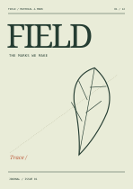

Material & Mark / A5 journal
A line
turns a page.
Trace the cover’s leaf from stem to tip. On the chapter divider the same outline passes through a numeral, tying an intimate detail to the rhythm of the book.


Material & Mark / A5 journal
Trace the cover’s leaf from stem to tip. On the chapter divider the same outline passes through a numeral, tying an intimate detail to the rhythm of the book.
